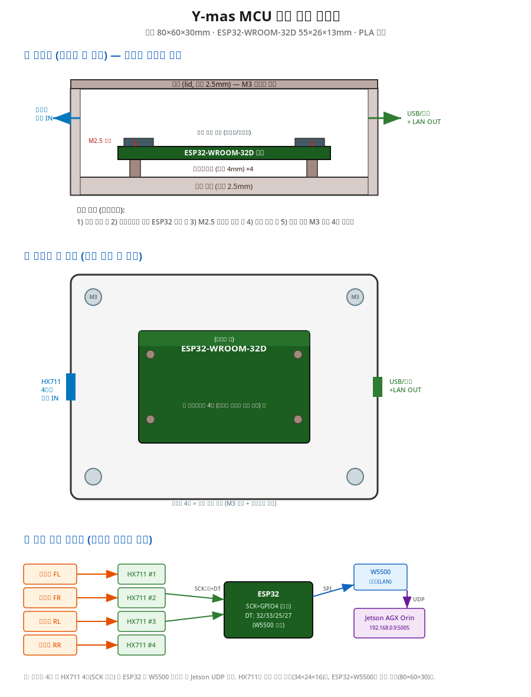

의료 Physical AI 경진대회
Y-mas
침대를 넘어선 병실 낙상 예측·감지 플랫폼
— 낙상을 감지하는 것을 넘어, 일어나기 전에 예측하는 엣지 AI
팀 Y-mas · AI반도체 전공 | 발표자: ________
문제 정의
의료 관련성 · 실용성
병원 낙상 — 가장 흔하고, 가장 치명적인 사고
- 고령·섬망·수술 후 환자에게 집중 — 골절·두부외상·사망위험
- 야간·무인 시간대에 집중 발생 → 상시 감시 공백
※ 발표 전 공신력 있는 낙상 발생률·비용 통계 1~2개 삽입 (의료 관련성 근거)
기존 대응의 한계
CCTV/영상 → 사생활 침해 + 소등 시 무력
매트센서·웨어러블 → 이미 떨어진 "후"에만 경보, 환자가 제거 가능
RGB 카메라 → 야간 소등 병실에서 검출률 0
→ 사생활을 지키며, 소등된 야간에도, 떨어지기 전에 작동하는 시스템이 필요하다.
해결 접근 — 핵심 아이디어
아이디어
2-Tier 하이브리드 아키텍처
TIER 1상시 감시
로드셀 4 → HX711 → ESP32
80Hz, 저전력·저비용
무게중심(COG) 편향 감지
→
TIER 2정밀 판정
ToF 카메라(IR) → YOLO11n-pose
→ ST-GCN 낙상 판정
평소 대기(sleep), 트리거 시 기상
→
TIER 3간호사 알림
간호 스테이션 대시보드
낙상 확정 시 실시간 통보
(연동 완료)
- 비싼 비전 AI를 24시간 돌리지 않는다 — 저렴한 로드셀이 이상 징후를 잡는 그 순간에만 깨운다 (UDP 트리거)
- 주 입력은 RGB가 아닌 IR(적외선) → 얼굴 미식별로 사생활 보호 + 소등 병실에서도 동작
차별화
아이디어 · 의료 관련성
"감지"가 아닌 "예측"
대부분의 낙상 시스템은 떨어진 뒤를 감지한다. Y-mas는 떨어지기 전 위험을 예측한다.
NORMAL정상 상태
RISK위험 전조 — 미리 경고
FALL낙상 확정 — 즉시 알림
- Risk 단계에서 미리 경고 → 간호사가 사고 발생 전 개입 가능
- Tier 1 예측 경로 PREDICTIVE_EDGE_RATE — 가장자리 이탈 속도로 임계 도달 시각(TTE)을 추정해 선제 트리거
구현 ① 하드웨어 실물
구현성 · 실용성
말이 아니라 — 실제로 만들었다

- 알루미늄 레일 플랫폼(30×60 프로파일) + 로드셀 4채널 + HX711 + ESP32
- 3D 프린트 인클로저(MCU·HX711 박스), 레일 어댑터, 바퀴 크래들/고임목
- 엣지: Jetson AGX Orin + Orbbec Femto W(ToF)
- 저비용 후설치 — 기존 침대에 레일 플랫폼을 까는 방식, 도입 장벽 낮음
구현 ② 실시간 동작 시연
구현성 ★
실제로 돌아간다 — 시연 영상
［ 시연 영상 삽입 자리 ］
실제 ymas_realtime_ir.py 실행 화면 녹화 (약 60–75초)
안정(Normal) → Tier1 트리거(166ms) → 위험(Risk) → 낙상(Fall) 흐름
※ 영상 추후 삽입. 발표 시 이 자리에서 재생.
내레이션 큐: ① Normal 초록 → ② 터미널 "Tier1 인터럽트 166ms" → ③ Risk 노랑(예측) → ④ Fall 빨강 + 스켈레톤 + Tier3 알림. "이 엔진은 지금 이 노트북에서도 구동됩니다."
구현 ③ 정량 성능
완성도 · 구현성
숫자로 증명하는 완성도
1.000
동적 낙상 recall
(미답 피험자 Holdout, 84/84)
≈2ms
추론 지연
(TensorRT FP16, ≈478 qps)
166ms
Tier1 반응 시간
(낙하 개시 → 경보)
- 학습 데이터: NTU RGB+D 120 + ETRI-Activity3D (Kinect V2 계열, 34,681 샘플)
- 설계 원칙: 놓친 낙상(FN)이 오경보(FP)보다 치명적 → precision≥0.95 게이트 안에서 recall 최우선
실용성 · 확장성
실용성 · 완성도
낙상 감지를 넘어 — 풀 베드 모니터링
지금 되는 것 (구현 완료)
✓ 2-Tier 아키텍처 · 실시간 추론
✓ Tier1 ↔ Tier2 연동 (166ms)
✓ Tier3 알림 연동
✓ 하드웨어 제작 · 정량 성능 검증
다음 단계 (확장)
→ 같은 센서 위에 욕창 예방 자세 분류 등 모니터링 추가
→ 실환경 데이터 수집 → 파인튜닝으로 현장 정확도↑
→ Tier3 간호사 앱 고도화
같은 센서 인프라 위에 임상 모니터링을 얹어 침대 위 환자 상태를 24시간 지키는 플랫폼으로.
마무리
Y-mas — 떨어지기 전에 지킨다
- 저비용 상시감시(로드셀) + 고연산 정밀판정(비전 AI)의 2-Tier 하이브리드
- 사생활 보호 IR · 소등 야간 동작 · pre-fall 예측
- 미답 피험자 동적 낙상 recall 1.000, 엣지 추론 2ms — 검증된 완성도
감사합니다. 질문을 기다리겠습니다.